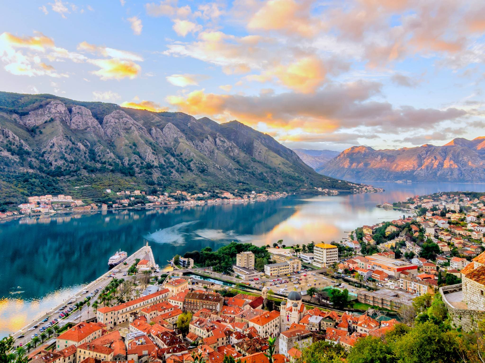
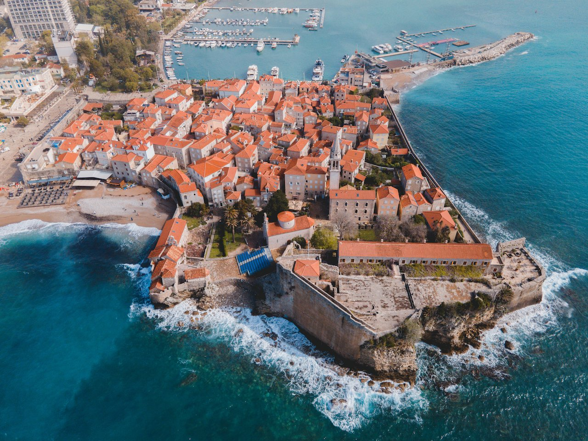
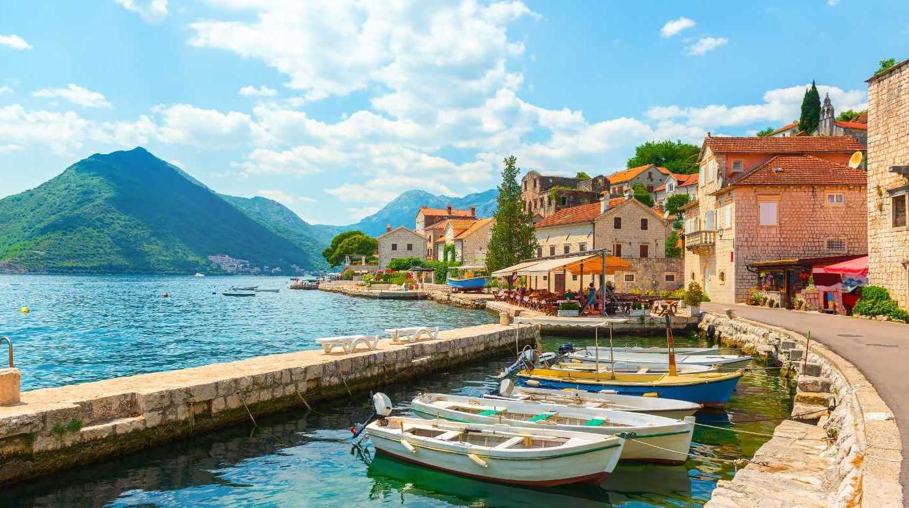
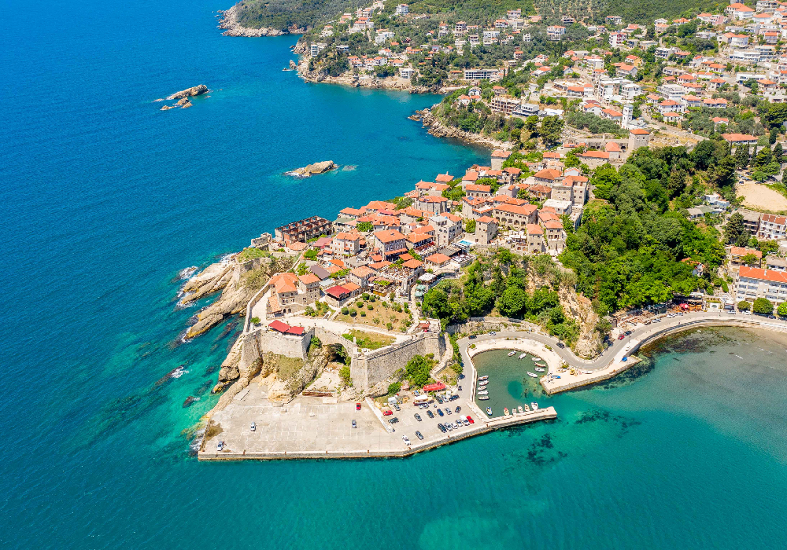

Kotor, dünyanın en genç ülkelerinden olan Karadağ‘ın, dünyanın en güzel körfezlerinden birinin kenarına kurulmuş bir şehri. Sarp bir dağın eteğinde kurulu olan ve bir zamanlar Venedik tarafından yönetilen liman şehri Kotor, İtalyan kasabalarına neredeyse tıpatıp benziyor. Orta çağ kasabası dokusunu olduğu gibi korumayı da başarmış. Üstelik İtalyan şehirlerinden daha nostaljik hissettiriyor. Adriyatik Denizine açılan olağanüstü etkileyici bir körfezin sahilinde yer alan Kotor, Adriyatik bölgesinde, Osmanlının hakimiyet altına alamadığı ender şehirlerden biri. Karadağ’ın kıyılarına katman katman sokulmuş, sıradanlıktan uzak ve etkileyici bir coğrafyaya sahip. Hem şehir hem de yanına kurulu olduğu Kotor Körfezi (Boka Kotorska) UNESCO Dünya Mirası Listesinde yer alıyor. Kotor, sadece Karadağ’ın değil Adriyatik Denizini içine alan tüm Akdeniz havzasının en ilgi çekici noktalarından biri. İnsan eli değmemiş gibi duran zümrüt yeşili dağlar, körfeze sokulan laciverte çalan deniz ve Orta çağ şehr Stari Grad yerleşimi şahane bir kompozisyon oluşturmuş. Dünyada az rastlanan bir coğrafi oluşuma sahip körfezin kıyısındaki Kotor, vizesiz seyahat edilebiliyor olması nedeniyle de Türklerin Avrupa‘da sıklıkla ziyaret ettiği bir yer. Kotor, Türk vatandaşlarından vize istemeyen Karadağ’da Türklerin Budva ile birlikte en çok ziyaret ettiği iki şehirden biri.
Budva, son yıllarda adını sıklıkla duymaya başladığımız Balkan ülkesi Karadağ’ın, popüler tatil şehirlerinden biri. Adriyatik kıyısındaki nefis bir konumu ve hayranlık uyandıran bir Orta çağ şehri var. Şehrin hem doğusuna hem de batısına uzayan plajların yer aldığı Budva Rivierası ve renkli gece hayatı, onu sadece Balkanların değil Avrupa’nın da moda tatil yerleri arasında sokmuş. Karadağ’ın kıyı şeridinin tam ortasında yer alan Budva, ülke turizmi için önemli bir merkez. Çünkü Karadağ’ın en güzel plajları ve koyları burada. Güzel kokulu çam ormanlarının bulunduğu sırtların önünde huzur veren çakıllı plajlar uzanıyor. Özellikle Avrupalı ve Rus turistlerin tercih ettiği sahilleri yaz aylarında cıvıl cıvıl. ‘Karadağ’ın Miamisi’ olarak da anılan Budva, vizesiz gidebileceğiniz bir şehir.
Perast, Kotor Körfezi kıyısında bulunan, sevimli, orta çağ esintili, tarihi bir kasaba. Kotor Körfezinin ortasında, Adriyatik’e açılan dar kanalın bitişiğinde yer alan Perast, kıyı ve dağlar arasında sıkışmış küçük bir yamaca kurulmuş. Önünde muhteşem bir körfez uzanıyor. Tek ana caddesi olan güzel mimarili kasabanın romantik sahil kafeleri dolup taşıyor. Tartışmasız Avrupa’nın en güzel kasabalarından biri. Karadağ‘ın en popüler şehri Kotor’a 12 km uzaklıkta yer alan kasaba, 17. yüzyıldan kalma dokusuyla bölgeye gelen turistlerin uğrak noktalarından. Kotor Körfezi boyunca uzanan diğer kasabalara kıyasla daha çok huzurlu ve estetik. Uçtan uca sadece bir kilometrelik Perast sahili, Barok saraylar ve zarif kiliselerle dolu. Aile işletmesi küçük otellerinde en az bir gece kalın.
Ulcinj (Ülgün), Karadağ’da Adriyatik Denizi kıyısında yer alan turistik bir kasaba. Kasaba nüfusunun büyük çoğunluğunu Müslüman Arnavutlar oluşturuyor. Sınırı geçmeden Arnavutluk’un tadına bakmak isteyenler Ülgün’e gidiyor. Hareketli ve güzel Ulcinj’in nüfusun %61’i Arnavut. Bunun da %68’i Müslüman. Arnavut sahil kasabalarından çok daha güzel olduğu için, yaz aylarında Kosovalı tatilcilerle dolup taşıyor. Ulcinj’de de belirgin bir Doğu hissi var. Zaten yükselen çok sayıda caminin zarif minareleri size Karadağ’da değil de Arnavutluk’taymışsınız gibi bir his veriyor. Mala Plaza denilen Küçük Plaj etrafındaki kebap standlarından yükselen müzik sesleri de kulağa yabancı gelmiyor.
© wwww.elegancedanismanlik.com All Rights Reserved. Developed by Erencan ÇELİK